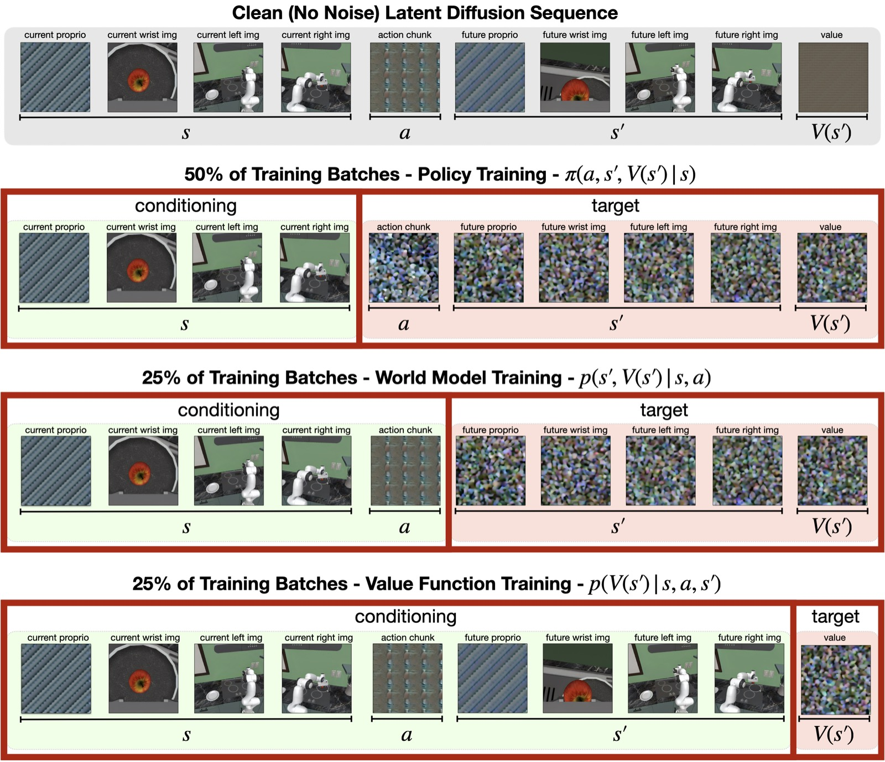
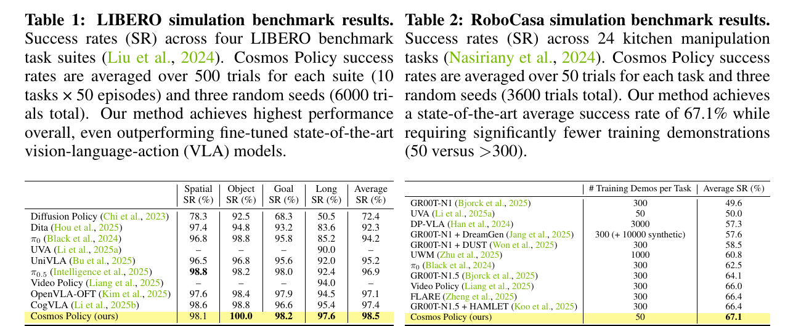
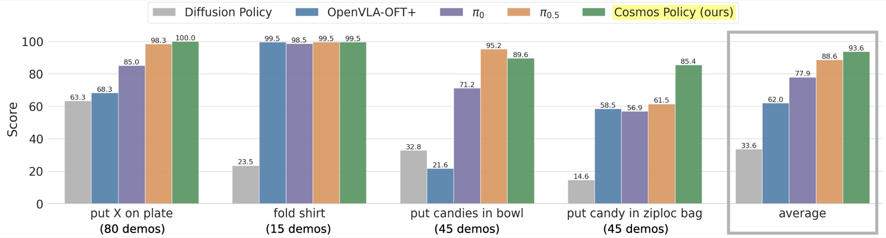

Cosmos Policy: Turning a Video World Model into a Control Interface
June 2026
Cosmos Policy rewrites robot control as diffusion sequence completion. Given the current observation, the video diffusion backbone denoises one latent-frame sequence whose target slots contain an action chunk, the future observation after that action, and the value of that future state.
A pretrained video model already has a useful input-output contract: condition on the current scene and generate what comes next. In notation, the video model is close to \(p(o_{t+1:t+H} \mid o_t, c)\). Robot control changes the objects in that contract: the model must choose a control variable, predict the state reached after that control, and score that state.
Cosmos Policy turns that control interface into a representation problem. It preserves the video backbone and changes the sequence from future frames only into a trajectory tuple: current observation, action chunk, future observation, and future-state value.
Figure 1 from the Cosmos Policy paper. The diagram defines the control interface: current state and task description enter the Cosmos-Predict2 backbone; action chunk, future state, and value leave as three targets from the same model.
The Missing Control Interface
A video generator models the distribution of future observations. A policy chooses an action that changes the world. Cosmos Policy links those two objects by making the action part of the generated latent sequence.
The latent sequence has one direct order:
current state and camera views
-> action chunk
-> future state and camera views
-> value of the future state
At the bottom layer, this is a sequence of tensors. Image observations pass through the video VAE; low-dimensional robot variables pass through a shape-matching map that normalizes the numbers and repeats them into a video-latent-shaped volume:
The current and future observations are different random variables in the same trajectory distribution. They are connected by the transition induced by the action chunk:
\[
s_{t+K} \sim P(\cdot \mid s_t, a_{t:t+K-1})
\]
After action and value become latent slots, the same model can be queried with different masks. With only the current state visible, it behaves like a policy. With state and action visible, it behaves like a world model. With state, action, and future state visible, it behaves like a value estimator.
The Smallest Technical Move
The mechanism that makes this interface compatible with Cosmos-Predict2 is latent frame injection. Cosmos-Predict2 expects a sequence of latent video frames. Cosmos Policy keeps that architecture and inserts non-image modalities into the same sequence.
The transformer only sees tensors with the video-latent shape. For images, the video VAE produces latent frames normally. For robot proprioception, actions, and scalar values, the paper normalizes the numbers to [-1, 1], repeats them across an image-shaped latent volume, and overwrites placeholder latent frames. At inference time, action and value extraction reverses the operation by averaging across the duplicated latent volume and un-normalizing the result.
Figure 2 from the paper. The red-bordered slots are the new modalities. Proprioception, action chunk, future proprioception, and value enter through latent-frame representation and are denoised by the same video diffusion model.
This representation is deliberately awkward. A low-dimensional action vector becomes an image-shaped latent slot. The cost is representation efficiency; the gain is compatibility with the pretrained video model's native training machinery.
The diffusion objective remains the original denoising problem. The clean sequence \(x_0\) is corrupted by Gaussian noise, and the denoiser learns to recover the clean latent sequence under a task condition and a mask:
Once the sequence is fixed, the same model can be trained as a policy, a world model, or a value estimator. The conditioning mask decides which slots are clean inputs and which slots must be denoised as targets.
This is a training contract across three conditioning masks. The full latent sequence stays the same. During policy training, the current state is clean and the action/future/value slots are targets. During world-model training, state and action are clean and future/value slots are targets. During value training, state, action, and future state are clean and the value slot is the target.
This is why the latent-sequence trick carries the paper's main contribution. Once action, future observation, and value live inside the same denoising object, the pretrained video model can be fine-tuned as a policy, a transition model, and a value model without adding separate heads or a new action module.

Appendix Figure 12 from the paper. The figure is visually busy, but the idea is simple: the red target box moves. The model is always denoising latent frames; the conditioning scheme determines whether that denoising step trains the policy, the world model, or the value function.
This is the main departure from many video-to-policy systems. Cosmos Policy turns action prediction into the same kind of sequence completion problem as future video prediction, using the diffusion sequence itself as the action interface.
Planning With Video Imagination
As a direct policy, Cosmos Policy samples an action chunk and executes it. The planning version adds a second step: sample multiple action candidates, predict the future state for each candidate, predict the value of that future state, and execute the action with the best predicted value.
The practical detail is rollout data. Planning from demonstrations alone is weak because demonstrations mostly show successful behavior. The paper therefore collects policy rollouts, including failures, and fine-tunes a separate planning checkpoint with more weight on world-model and value prediction. At deployment, the original checkpoint proposes actions, while the refined checkpoint scores their futures.
Figure 7 from the paper. Model-based planning with a predicted future state and value improves over the base policy on the two difficult ALOHA tasks. The improvement depends on rollout-data refinement and a best-of-N search procedure.
What The Experiments Actually Test
The direct-policy results test whether video pretraining is a strong initialization for imitation control. LIBERO and RoboCasa are simulation benchmarks; ALOHA is the real bimanual manipulation setting. The headline numbers are high: 98.5% average success on LIBERO, 67.1% on RoboCasa, and 93.6 average score on the ALOHA tasks.

Tables 1 and 2 from the paper. The useful comparison combines score and data budget. RoboCasa reports 67.1% average success with 50 demonstrations per task, while many VLA baselines use hundreds or thousands of demonstrations per task.

Figure 4 from the paper. The real-robot result is strongest on the average score and on tasks where high action multimodality and precision matter. Appendix Table 3 adds an important caveat: pi0.5 is slightly higher on the paper's OOD slice, even though Cosmos Policy has the best full average.
The ablation is the mechanism check. If future-state and value prediction were decorative auxiliary targets, the action-only version would stay close. In RoboCasa, the barebones policy that only models actions falls from 67.1% to 44.4% average success.
Table 5 from the paper. The large drop in the last ablation is the important row: removing both world-model/value training and auxiliary future-state/value supervision makes the policy much weaker. The table also shows a speed result: one denoising step reaches 66.4% on RoboCasa with 0.16 second latency per action chunk on one H100.
This supports the paper's core mechanism. The future prediction target supplies part of the policy training signal.
Where The Claim Is Still Fragile
The evidence supports a concrete claim: a pretrained video diffusion model can become a strong manipulation policy when actions, future states, and values are placed into its native latent sequence. General closed-loop world modeling remains outside what these experiments establish.
The first weakness is planning cost. The paper reports around 4.9 seconds for the best-of-N planning setup on 8 parallel H100 GPUs in the ALOHA experiments. Direct policy inference is much faster, especially with fewer denoising steps, but the full planning loop is still hard to imagine for dynamic manipulation or locomotion.
The second weakness is data distribution. Planning requires rollout data to refine the world model and value function beyond successful demonstrations. Video pretraining supplies a strong prior, while effective planning still needs experience from the deployed policy's own mistakes.
The third weakness is representation efficiency. Repeating actions and scalar values across a full latent volume is a clever compatibility trick. It preserves the pretrained video interface and leaves open whether control variables deserve a lighter representation.
Cosmos Policy turns a video model into a control interface by changing the objects inside the diffusion sequence. The next technical pressure point is closed-loop reliability: action chunks must be precise, imagined futures must stay calibrated, and value estimates must remain useful after the robot leaves the demonstration distribution.
当前观测和未来观测属于同一条 trajectory distribution 里的两个随机变量，中间由 action chunk 诱导的 transition 连接：
\[
s_{t+K} \sim P(\cdot \mid s_t, a_{t:t+K-1})
\]
action 和 value 变成 latent slots 后，同一个视频模型可以被不同方式调用。只给 current state，它像 policy；给 state 和 action，它像 world model；给 state、action 和 future state，它像 value estimator。
这组公式是训练契约。完整 latent sequence 一直不变。训练 policy 时，current state 是 clean input，action、future、value 是 target。训练 world model 时，state 和 action 是 clean input，future 和 value 是 target。训练 value 时，state、action、future state 是 clean input，value slot 是 target。
这就是 latent-sequence trick 和论文核心贡献之间的关系。action、future observation 和 value 进入同一个 denoising object 后，pretrained video model 就能在不加独立 action head、不重做架构的情况下，同时承担 policy、transition model 和 value model。
这组结果支撑的是论文的核心机制：future prediction target 直接改变了 policy training signal。
证据哪里还脆弱
这篇论文的证据支撑一个具体事实：把 action、future state 和 value 放进视频模型原生的 latent sequence 后，pretrained video diffusion model 可以被改造成很强的 manipulation policy。通用 closed-loop world model 仍然超出这些实验能证明的范围。
第二处弱点是数据分布。为了让 planning 有效，论文需要收集 rollout data 来 refinement world model 和 value function，让它们见到 demonstrations 之外的失败经验。这个设计合理，也说明 planner 仍然需要来自自身部署错误的经验。
第三处弱点是表示效率。把 action 和 scalar value 复制到完整 latent volume 里，是一个很聪明的兼容性技巧。它保住了 pretrained video interface，同时留下一个开放问题：control variables 是否需要更轻的表示方式。
这篇论文把 action、future state 和 value 变成一等 denoising target，由此把 video diffusion backbone 改造成控制接口。接下来的技术压力点变成 closed-loop reliability：action chunk 必须足够精确，imagined future 必须保持校准，value estimate 必须在离开 demonstration distribution 后仍然有用。